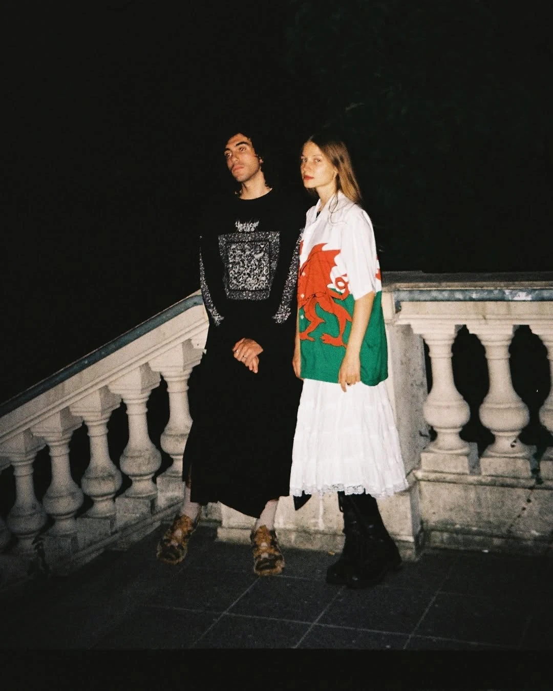
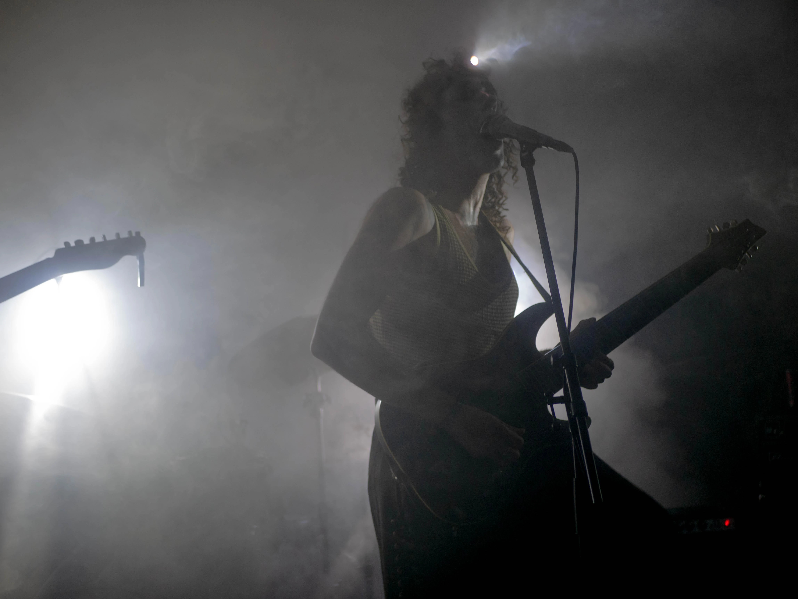

diamantista live

diamantista - LOVE IS VITAL

LICITIR live

LICITIR - Tomorrow we dream of sleeping in a garden of camellias

pastoral live

pastoral - Un corazón mustio y marchito por culpa de las tribulaciones y los padecimientos